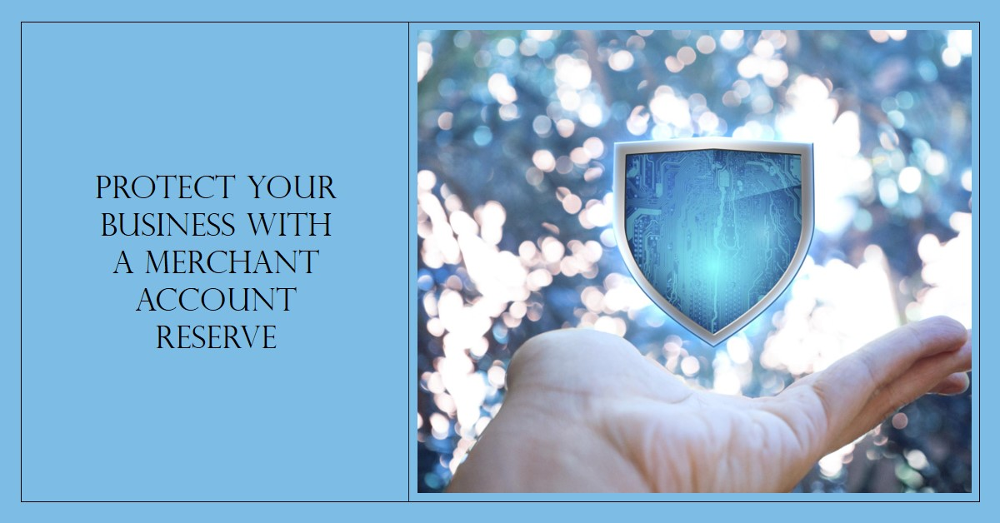

How a Merchant Account Reserve Can Save You from an Unforeseen Risk
February 14, 2024 You have heard about a merchant account that enables merchants to send and receive electronic payments to ensure smooth payment journeys. While this account makes it possible to accept payments through electronic forms of payment, there are potential financial risks due to customer chargebacks. If a merchant account cannot deal with those, it may lead to possible business loss as they have limited control over their savings, which in turn bottlenecks the cash flow. Merchant account reserves can resolve this problem and safeguard your cash online, ensuring stability and security for your business. But what is a merchant account reserve, who can use this, and is it really worth it? This blog aims to address these questions and also discusses the benefits of a merchant account reserve for businesses in the B2B landscape.
What Is a Merchant Account Reserve?
A merchant account reserve is a portion of an account that is kept safe aside to minimize the potential risk from chargebacks or future liabilities on the account. The objective of this account is to ensure financial security for merchants and banks so they have funds available in case of a financial loss. A reserve account acts like a safety net, stepping in to cover liabilities when unexpected events threaten a merchant's financial stability. This is a game changer for businesses experiencing delayed payments or chargebacks more frequently.
Why is Merchant Account Reserve Crucial?
This account can help you manage risks that are associated with accounts receivable (AR) collections so that your cash flow is not affected. Though an accounts receivable automation software can help collect your payments, with a reserve account in place, you can navigate the risks of potential losses associated with fraud, chargebacks, and other high-risk transactions. It works as a safety account, which makes it possible to recover funds lost due to risky transactions. Without a merchant reserve account, the likelihood of recovering lost funds is quite low. Even if there is any potential, there are several checks that make the recovery process significantly time-consuming.
Where and How Merchants Get a Merchant Account Reserve?
The decision to get a merchant account reserve is made by the acquiring bank or payment processor during the underwriting process. Many factors influence this decision, including the historical background of the business, chargeback history, creditworthiness, industry, refund rates, and average amount of transactions. The high-risk industries with the nature of the business that are susceptible to fraud and chargebacks are more likely to be subject to the reserve account. Using this account, they can improve their AR collection strategies and sustain their financial health. Some of those industries include traveling, subscription-based services, online gaming, and other types of online businesses.
In addition, businesses that are relatively new or haven't built up much processing history might need to establish a reserve until they prove their reliability over time. The specifics of how much needs to be set aside and for how long are decided by the payment processor. They might review and tweak these requirements from time to time based on how the merchant is doing and their risk level.
Types of Merchant Account Reserve
Rolling Reserve
One of the most prevalent types of reserve accounts is the rolling reserve account. This involves withholding a certain amount of daily or weekly transaction volume of the merchant transactions that is saved as a reserve. You can assign a certain percentage for the volume to hold every day or week for six months to a year.
With the passage of time, you will find a significant portion in your reserve account, which is, of course, based on your transaction frequency. It can help merchants to access funds over time or deal with potential chargebacks or losses.
Upfront Reserve
Also referred to as a fixed reserve, an upfront reserve requires merchants to deposit one-time money into the account for reserve before processing payments. This amount is estimated based on the potential risk exposure, which may be for a trial period or held indefinitely.
Capped Reserve
This is another useful type of reserve account that allows merchants to set a certain limit of the reserve account, and the limit is met by taking a percentage from each transaction. No more funds are withheld once the limit is met. With the capped reserve account, merchants can be more predictable of the funds they are holding in reserve as safety money.
Hybrid Reserve
Certain payment processors opt for a hybrid reserve approach, which blends different reserve types tailored to a merchant's unique risk profile and requirements. With this setup, the processor might start with an initial upfront reserve that transitions into a smaller rolling reserve after the trial period is completed.
Key Benefits of a Merchant Account Reserve
1. Access to More Customers
This is the most obvious reason for establishing a merchant reserve account, as this will expand your customer base because millions of customers use electronic transactions that can benefit your business. Using this account, your customers can pay with electronic payments, that is, card payments. If your business can't accept payments through these very common methods, you can end up losing out on a lot of potential revenue.
2. Seamless Integration
Accessing this account is easier with its integration abilities, making it easier and effortless for merchants to connect with their ERPs or accounting software. With just a few straightforward setup steps and support from your payment provider, your business can start receiving credit and debit card payments right away.
3. Existing Credit History is Not an Issue
The payment history of a business owner can affect its creditworthiness, but this is not the case with a reserve account. Using this account, you will never have to worry about the financial challenges that you have faced in the past. For instance, missed payments, unauthorized access, bankruptcy, and many others.
4. Enhanced Credibility
One of the biggest hurdles for a company operating in any high-risk industry is establishing credibility with potential customers. Using a reserve account, you can offer diverse payment options to make transactions seamless, which can instantly attract customers with the convenience of card payment technology for smooth transactions.
Conclusion
Acquiring a high-risk merchant account can pose a significant challenge for businesses categorized as high-risk, which is often unavoidable due to the nature of the business or industry. However, partnering with a reputable payment processor that provides a merchant account reserve can resolve this issue by minimizing risk, allowing customers electronic payment options, and integrating this into your existing system. Having a high-risk merchant account can provide protection against customer chargebacks and financial losses, offering various benefits. This blog highlights different types of accounts that you can consider depending on your preference.